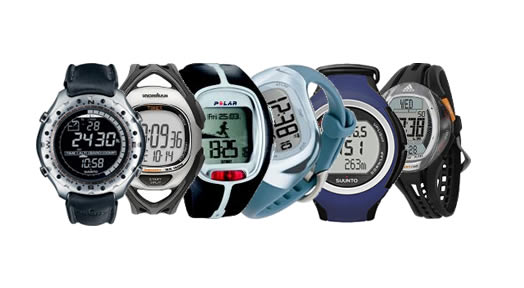
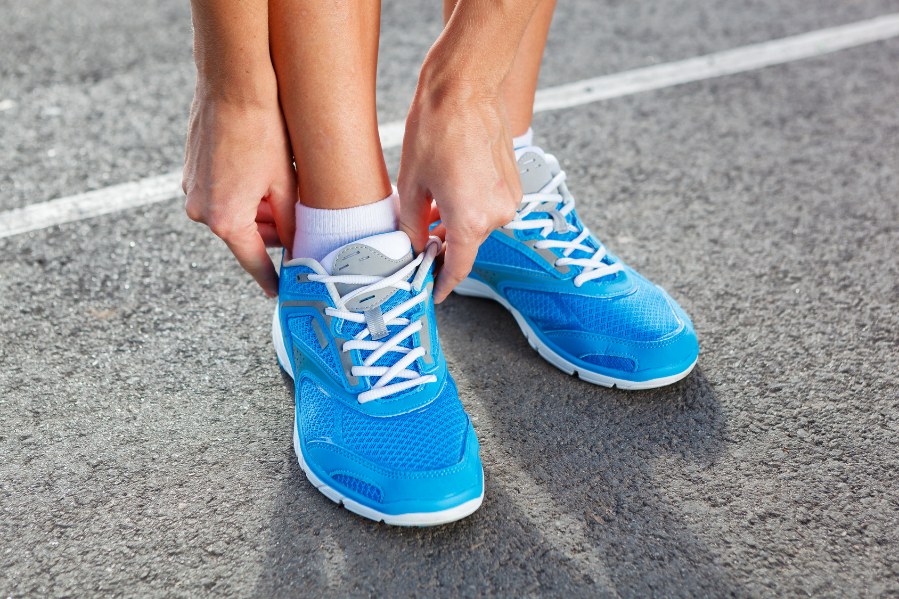

Jeśli czytasz ten tekst to znaczy prawdopodobnie, że jesteś osobą, która nie jest w stanie utrzymać ciągłego biegu przez czas dłuższy niż kilka minut i czerpać z tego przyjemność. Dlatego musisz się zastanowić nad jakimś Planem Działania, wybrać konkretny Plan Treningowy, który doprowadzi Cię do pierwszego w życiu biegowego egzaminu – ciągłego biegu przez 30 minut. Te 30 minut to taka bariera po przekroczeniu, której można powiedzieć, że nie jesteś już zupełnym żółtodziobem. Prezentujemy jeden z przykładowych planów.
Najprostszy, najkrótszy, matematyczny. Trwa 6 tygodni. Zaczyna się z bardzo niskiego poziomu - 30 sekund biegu. W pierwszym dniu 7 tygodnia – czeka Cię wielki test – 30 minut ciągłego biegu. Czas Twojego treningu to zawsze równe 30 minut. Zawsze składa się on z sześciu powtórzeń pewnego cyklu. W pierwszym tygodniu zaczynasz od 30 sekund biegu i 4 minut 30 sekund marszu. I powtarzasz to sześciokrotniee. W każdym kolejnym tygodniu zmienia się struktura takiego cyklu, rośnie czas pokonywany w biegu kosztem czasu pokonywanego w marszu. W szóstym tygodniu są to już aż 4 minuty i 30 sekund w biegu i tylko 30 sekund marszu.
Dla kogo: dla początkujących, którzy na początku nie są w stanie biec przez dłużej niż 30 sekund, młodych, którzy są gotowi na szybkie postępy
czas trwania: 6 tygodni
czas trwania jednego treningu: 30 minut
najkrótszy odcinek w biegu: 30 sekund
najdłuższy odcinek w biegu: 4min 30 sekund.
Wszystkim, początkującym zawsze radzimy – zaczynaj powoli, na ściganie przyjdzie jeszcze czas. Jeśli masz problem z utrzymaniem biegu przez założony czas – zastanów się, czy możesz biec wolniej. Ważne, abyś utrzymał krok biegowy, ale możesz zwolnić. Nie czuj się zakłopotany, że biegniesz w tempie czyjegoś marszu, takie są początki.
Ta decyzja zależeć będzie od tego w jaki sposób będziesz chciał monitorować intensywność treningu. Na Twoją decyzję może mieć wpływ cena tych urządzeń - w zależności od stopnia zaawansowania możemy mówić o kosztach od 50 zł (zegarek) do blisko 2 tys zł (zegarek biegowy, pulsometr, GPS, Footpod z możliwością zrzucania treningów do komputera). 
Czy potrzebujesz specjalnego ubrania? Jeśli zaczynasz biegać w zimie – to raczej potrzebujesz, jeśli latem – nie koniecznie. Najważniejsze - niezależnie od pory roku - jest warstwowe ubieranie. Wśród tych warstw największe znacznie ma pierwsza warstwa, czyli bielizna.
Czy konieczne są specjalistyczne buty do biegania? Dobre buty do biegania znacznie podnoszą komfort biegu. Jeśli możesz sobie na nie pozwolić – polecamy. Może być to zresztą świetny bodziec do wyjścia na trening – testowanie nowych butów. 
Wiele osób obawia się, że nie będzie w stanie biegać regularnie, bo albo uważają, że jest to zbyt duży wysiłek, albo próbowali zaczynać już wielokrotnie i zawsze kończyło się to po pierwszym razie albo nudziło im się szybko.
Żeby biegać, przede wszystkim trzeba CHCIEĆ, czyli mieć motywację. Długą i stałą, aby nasz zapał nie prysł po pierwszym trudnym treningu. Powody mogą być różne – zdrowie, zrzucenie wagi, utrzymanie dobrej formy, „bo biega chłopak, który mi się podoba” - każdy jest dobry, byle biegać!
Źródło: www.biegambolubie.com.pl